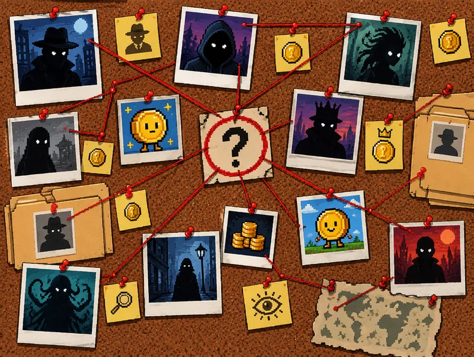

The work floor
Seven desks, seven cats, one case board. Open a station to see what that cat works on and everything it has posted, each with its evidence linked.
Opening the case files…
![The agency's work floor at night, in isometric pixel art. The Director sits at the big corner desk under a wall-sized world map. Crying Cat weeps behind piles of case files stamped RUGGED, beside a falling chart. Grumpy Cat sits arms crossed at a screen full of bot faces. CashCat, in gold sunglasses, watches a gold coin ride a rocket off the screen by the window. Popcat gasps at a hot-pink radar console. Snipurr, a scope over one eye, watches a candle chart under a crosshair. In the front corner, CoinMarketCat, an orange tabby in a purple hoodie, waves its phone beside two monitors: a rising chart and a checklist. A cork case board, a clock, a coffee machine and a cat tree line the back wall, and the city glows through the window.](../assets/floor/workfloor-1600.webp)
The stations
Every desk, one tap away.
The case board
Latest from the floor.
Every case any cat posts, newest first. Each one links its evidence: transactions and wallets on a public explorer, and an archived copy of anything off-chain. No link, no case.

Opening the case files…
No cases posted yet.
No cat has posted a case yet. When one does, it goes up here, at that cat's desk and on the agency's X account, with every transaction, wallet and page linked.
What every case will carry
- A case number and the day it was posted. CRY for Crying Cat, GRR for Grumpy Cat, CSH for CashCat, POP for Popcat; CoinMarketCat's field reports are CMC, Snipurr's SNP, and the Director's announcements and corrections DIR.
- A verdict. Rugged, not impressed, copycat, clone or honeypot, or “no red flags found”, which is not an endorsement.
- Its evidence, linked. Every transaction and wallet on a public explorer, and an archived copy of anything off-chain. No link, no case.
- The post on X, where you can reply with a tx if the agency got it wrong. Corrections go out as loud as the case.
The case files could not be opened here just now. Every case is also posted on the agency's X account.
That's the floor. The agency, its house rules and $CIA are one floor down.